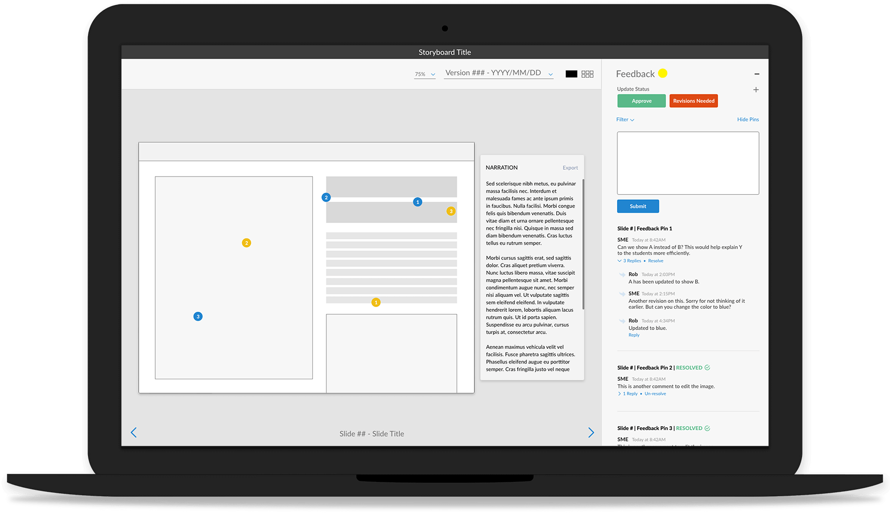

Hypeboard
Hypeboard is a web and desktop app developed for storyboarding eLearning courses that streamlines the instructional design and client review process.
Project
eLearning Storyboarding Tool
Role
Lead Product Designer, Assistant UX Researcher
Tools
Adobe XD
Project Overview
eLearning does not have an all-in-one tool developed specifically for the industry. Currently most teams use Word and Powerpoint. Files are passed back and forth between the client, instructional designers, visual designers, developers, and others.
My team was tasked to explore a proprietary tool internally within an eLearning company. The tool would be beta tested with selected clients, the goal being a wide market release.
Objective
- Create a sustainable, intuitive tool that is functional across multiple team members as well as being client friendly.
- Reduce confusion, contain all project notes, internal, client facing, and from clients, and to reduce project bureaucracy.
Scope of Work
Research analysis, user interviews, incorporating feedback from potential users, proposed wireframes, and final design for development.
Competitors
Image iSpring Solutions
Microsoft Word/ Google Pages
- Accessible to most enterprise teams
- Does not allow for expression of visual intent
- Ability to make and resolve dated notes
Image iSpring Solutions
Microsoft Powerpoint/ Google Slides
- Accessible to most enterprise teams
- 1 slide = 1 screen
- Non-designers can insert written content, visuals and place holders
- Viewer can understand flow of the course

Image Boords
Boords (animation storyboarding tool)
- Allows for narration/script input
- Intuitive GUI
- Allows for drawing/design
- Upload pictures
- Intended for visual mediums
User Interview Objectives and Questions
Key Focus Areas Included:
- Personal Workflow: What software does each role use and how do they use it? What are issues that keep coming up for each project?
- Collaboration: How does the team keep track of communication and additional notes that are not the content of a lesson? What opportunities to collaborate are being overlooked?
- Client Feedback: How does a client provide feedback and how is it stored with the project? What access does a client have to communications and project documents?
Interview Objectives:
- Identify what works and breakdowns in the process, and why.
- Understand pain points from each participant on a project.
Sample Questions:
- Walk through the lifecycle of a project. From a big picture perspective how does your role fit and how would you ideally see your role in the process?
- Think about a successful project. How was it organized and managed? How did the team communicate?
Participants Insights + Recommendations
Instructional Designer
- Client sends content in multiple forms. Word documents, PDFs, existing websites, etc.
- Prefers to work in Powerpoint for the visual tools.
- Revisions often bypass instructional design and go back and forth between visual design and the client. They rely on PMs to keep them in the loop.
Visual Designer
- Would like to more easily share designs. Currently they save designs and insert into custom Powerpoint templates.
- Often feels like the connection between each member of the team working closely with instructional design and development to ensure easy going from content development to final product.
Software Developer
- Since development doesn't usually come in until the end, the most successful projects are when content and assets are well organized.
- Sometimes all notes are not included with asset delivery.
Client
- Wants the ability to see a project from a big picture perspective, too often they feel focused on the details of design.
- Would like an easy way to see and compare previous designs.
Project Management
- As client facing team member PMs must understand the entirety of the project.
- Sometimes hearing details 2nd hand between other team members, they must keep a keen eye out on all notes from every contributor across files, emails, Jira tickets, and Confluence.
Comments from the team lead us the following key features:
- Dated version control
- A place to display narration for voice overs
- Basic design tools for instructional design
- A place for functionality and animation notes
- A commenting system that allowed for pinned comments, replies to comments, and resolution of comments
Initial Sketches
Modes + Features
- With instructional design mode, internal, and client review modes, the project can be taken from conception, to client review and revisions. Hypeboard would keep track of initial and subsequent versions for reference all the while sharing one link to the client for online review. A more robust design program such as Sketch or XD would be used for UX and UI design.
- Instructional designers can use Hypeboard to set the narration and suggest ways to best convey content using simple design tools.
- Internal review mode allows for comments to be shared within the team only so notes meant for internal use can stay with the content.
- Client review mode allows clients to use the feedback function to add comments in general or to a specific frame or item, as well as use the basic design tools to add or change content in a freeform manner.